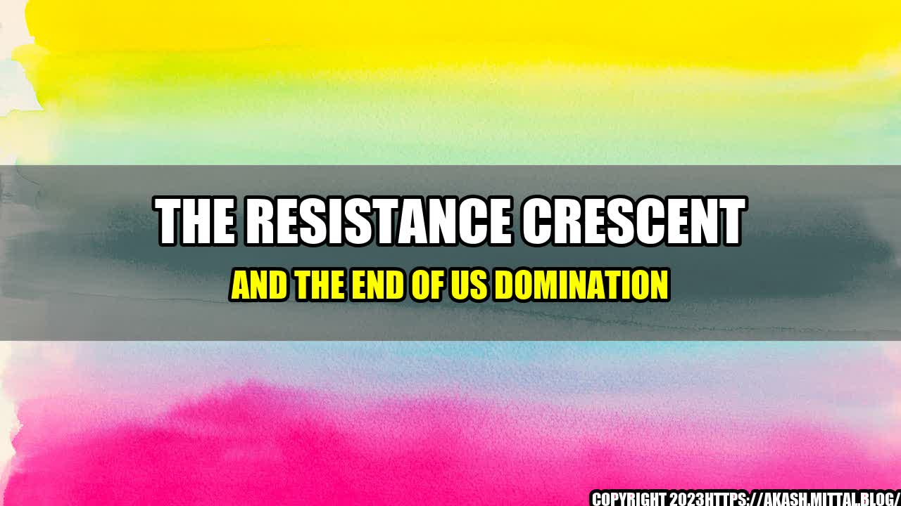

The Resistance Crescent and the End of US Domination

It all started in the small village of Khiam, southern Lebanon, in the summer of 1994. A group of Hezbollah fighters ambushed an Israeli patrol, killing several soldiers and capturing others. The incident sparked a powerful reaction from Israel, which launched a massive bombing campaign against southern Lebanon.
But Hezbollah fighters refused to back down. Instead, they launched a ferocious resistance campaign, which lasted for 18 years and eventually forced Israel to withdraw its troops from southern Lebanon in 2000.
This was a turning point in the history of the Middle East. It showed that small, dedicated groups of fighters could successfully take on much larger and better equipped forces and emerge victorious. And it paved the way for a series of other resistance movements to emerge across the region.
The Resistance Crescent
The Resistance Crescent is a term used to describe the arc of countries and groups in the Middle East that have successfully resisted Western and Israeli domination. It includes Syria, Lebanon, Iran, and the Palestinian Territory. These countries and groups have been able to resist external pressures and maintain their independence and sovereignty.
One of the key factors that has enabled the Resistance Crescent to emerge and thrive is the fact that these countries and groups share a common enemy: the United States and Israel.
These two countries have sought to dominate the Middle East and control its resources for many years. They have used a variety of tactics to achieve this, including military intervention, economic pressure, and political manipulation.
But the Resistance Crescent has proven to be a formidable opponent. It has been able to build up its military capabilities, forge alliances with other anti-Western countries and groups, and develop alternative economic systems that are not dependent on Western powers.
Quantifiable Examples
- In Syria, the government of Bashar al-Assad has been able to resist a sustained Western and Gulf-backed campaign to overthrow it. Despite years of war and economic sanctions, the Syrian government has been able to hold on to power and rebuild much of the country.
- In Lebanon, Hezbollah has been able to maintain its status as a major political force and military power, despite repeated attempts by Israel and the United States to weaken it.
- In Iran, the Islamic Republic has been able to develop a powerful military and economic system that is largely immune to Western sanctions.
- In the Palestinian Territory, Hamas has been able to resist Israeli attempts to crush its leadership and infrastructure. It has also been able to forge alliances with other groups in the Resistance Crescent, such as Hezbollah and Iran.
Conclusion
The Resistance Crescent is a Powerful Force for Change in the Middle East
- The Resistance Crescent has shown that small, dedicated groups of fighters can successfully take on much larger and better equipped forces and emerge victorious.
- The Resistance Crescent has been able to build up its military capabilities, forge alliances with other anti-Western countries and groups, and develop alternative economic systems that are not dependent on Western powers.
- The Resistance Crescent is a powerful force for change in the Middle East and beyond. It is paving the way for a new era of independence, sovereignty, and self-determination.
References
- https://electronicintifada.net/content/hezbollahs-resistance-war/23451
- https://www.aljazeera.com/news/2019/04/lebanon-hezbollah-resistance-army-190412082906569.html
- https://iranprimer.usip.org/resource/brief-history-iran%E2%80%99s-nuclear-program
- https://www.aljazeera.com/news/2021/5/14/israeli-strikes-kill-20-palestinians-including-9-children
Curated by Team Akash.Mittal.Blog
Share on Twitter Share on LinkedIn